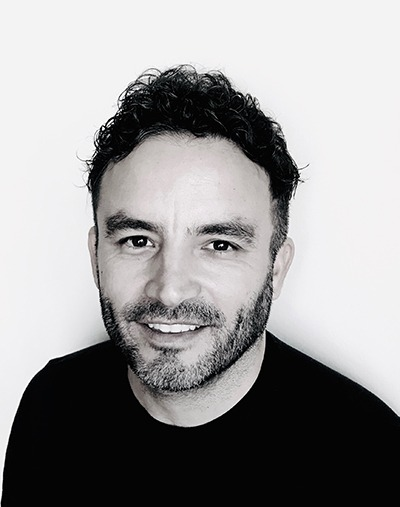

Sobre mí
Mi interés por el dibujo y la arquitectura se remontan a mi infancia, en la que pasaba horas dibujando y ambientando espacios inventados. La pasión por el cine se despertó durante la filmación de un cortometraje realizado con amigos en mi adolescencia. Desde ese momento supe que era eso a lo que quería dedicarme.
Desde el año 2000 he realizado la Ambientación y la Escenografía de películas de Juan José Campanella, Fernando Meirelles, Lucía Puenzo, Pablo Trapero, Luis Ortega, Daniele Luchetti, entre otros.
Como Director de Arte, he colaborado con directores como Lucía Puenzo, German Kral, Pablo Solarz, Fernando Salem, Pablo Trapero, Nicolás Puenzo, Sergio Bizzio, Pablo Fendrick, Ricardo Diaz Iacoponi y Alejandro Montiel.
Entre mis trabajos fuera de los sets de filmación, se destaca la Dirección de Arte del Desfile del Bicentenario de la República Argentina, un espectáculo presenciado en vivo por dos millones de personas.
La posibilidad de crear el universo visual de cada proyecto y cada personaje es lo que más me apasiona de mi profesión. Sumergirme en mundos nuevos y desconocidos para poder construir una imagen es el sueño que me acompaña desde que era pequeño.
